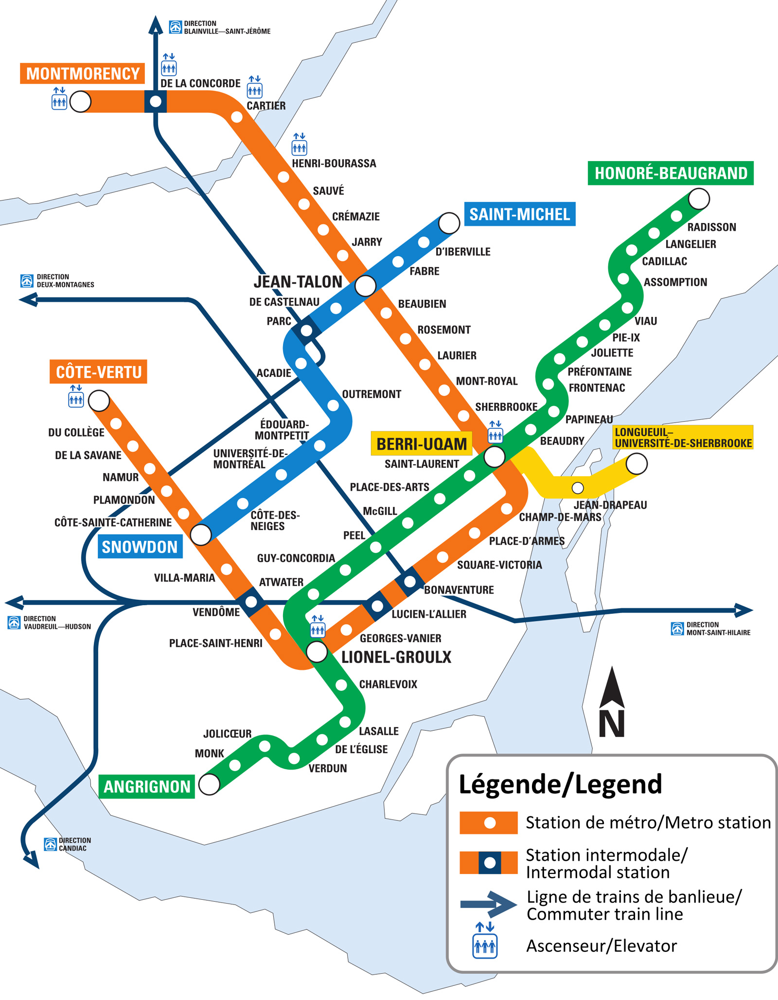

我今年整个一月是在蒙特利尔度过的。
这是由于学院有一个冬季游学项目，可以报名去世界各地的学校参加冬季的短期项目。我发现麦吉尔大学有个课程还挺有意思的，于是就跑到蒙特利尔去了。我私以为，每到一座新的城市，最大的乐趣便是在它的街头巷尾穿行，寻找隐藏在城市表象之下的精神内涵。不过在那之前……你得确保生存问题。
下面你将阅读的，就是我这一个月来在蒙特利尔的一点儿生活经验，以及满嘴跑马，美其名曰——指南。
一 | 并不会冷死
无法否认的是，蒙特利尔的冬天很冷。不过这种冷并不是令人绝望的那种冷，只要你穿得够厚实，还是抵挡得住的。
在我停留的一月份，蒙特利尔的气温通常在零下二十度至零下十度之间徘徊。气温整体上不会超出这个区间，不过也有过一些大波动，这些稍后再提。这样的温度，实际上只要做好以下准备就不会出事：
- 一件足够厚实的外套。
- 外套下两到三件衣服，最好包含一件毛衣。
- 两条或以上的裤子。
- 保暖性能较好的鞋子或袜子。
- 围巾和帽子。
这个列表实际上不是很需要手套，因为把手插在外套口袋里足以抵御寒冷了。蒙特利尔毕竟也不过北纬45°，只要不起风，都还算能承受得住。
另外我建议外套下的衣服也不要穿太多。一件短袖一件毛衣足矣，顶多再加一件衬衫。当地室内空调常常都是开到二十几度，太多衣服在室内会很难受。
二 | 拯救你的锂电池
我就这么坚持着「零下十几度也不过如此嘛」的态度，直到我的手机第一次在户外被冻得关机。
其实这件事情我早该想到了，毕竟连高中化学都会教我们：温度下降，绝大部分反应的速率都下降；对电池来说，反应速率下降就意味着输出功率减小。对于锂电池来说，低温还意味着更多的制约条件，比如电解液凝固、锂离子不易扩散等。总之就是：锂电池很怕低温。
就我的情况而言，我那台老旧的 iPhone 6S 在蒙特利尔的室外无法撑过十分钟。另外在被这么冻了小半个月之后，它的电池性能也显著下降了。
在冬季的蒙特利尔，如果你一定要带手机出门，以下是你能为你的电池做的事情：
- 如果你准备戴手套，最好还是留出一只手捂手机。单纯地放在外套口袋里并不能为它保暖。
- 可行的话，还是尽量贴身放，并且少拿出来吧。
- 如果真的被冻关机了，给电池部位保暖一会儿即可回电。不要在低温状态下去尝试充电，可能会对电池造成不可逆的损伤。
别小看这个「不可逆的损伤」。等我回国的时候，我的手机电池状况已经差到无法正常使用了，放在那摆两个小时就会自己没电。
三 | 公共交通指北
蒙特利尔的公共交通本身相当发达，公交与地铁可算是遍布全市了。夏季的时候，甚至还有城市单车可供骑行。不过在冬天，公共交通只能选择 STM 运营的公交与地铁线路。
蒙特利尔的地铁票大约为 3.25 刀，如果停留时间较长，理想的选择是购买三日票或是周票。你可以在 这个链接
找到车票定价的详情。在市中心时，绿线与橙线是最常见的选择。这两条地铁线路高度平行，不少站点之间还有地下通道相互连接。有一件事是坐地铁需要特别注意的：蒙特利尔的地铁里几乎全是法语，可能需要准备好谷歌翻译。
蒙特利尔的公交车价格与地铁是一样的，可以说是有点小贵。另外你也可以尝试使用
Uber，起步费大约八到九刀；高峰时期可能会翻倍，如果能凑到几个人一起分摊就比较合算了。
四 | 如何做一顿饭
蒙特利尔的总体物价水平在加拿大算是中等，但吃饭的消费却不低。一顿正常的简餐，价格大约在 10 至 20
刀；稍微好一些的牛排或是料理，就要 30 刀起步了。天天出门吃，钱包可经受不起。对比之下自己做饭就相对便宜一些，10 刀以内就足够吃饱。
上课期间，我们住的是类似于酒店式公寓的学生宿舍，几个寝室共用一间厨房的那种。厨房里提供电磁炉、烤箱和微波炉……还有永远用不完的吸油纸。所以我们经常几个人凑在一块，自己做饭吃。做饭的第一步是厨具。大部分厨房用品在超市里都能买到。如果要居住较长时间，建议安顿好以后就去超市晃一圈。
在
Dollarama，你可以找到大部分需要的厨房用品。这家超市出售的大多是廉价商品，但是质量完全够用上个一年半载。在这里你可以买到绝大部分杯子、碗、餐具等。
去完 Dollarama 可以再去 Provigo 晃上一圈，这家超市卖的东西价格更高，质量也更好。我去的时候刚好赶上平底锅三件套促销出售，只要 12
刀就能买到。不过除此之外，在这里更多是直接买各种食材。结账时，可以问柜员要一张 Optimum 的卡，注册是免费的。有了这张卡，你在购买每周指定的商品时可以获得一些积分，并能兑换成现金抵扣。与
Provigo 同等价位的选择还有 IGO，它与前者在货源和规模上都差不多。
此外在唐人街还有一家「家乐福」。这里打引号是因为，这个「家乐福」不是 Carrifour，而是一家私营的超市，英（法）文名叫 G&D
Supermarché。这家店有很多中式的商品出售，你可以买到李锦记的酱油、康乐醋、以及各种各样国内能见到的零食。
至此工具食材完备，我想你应该是可以顺利开工了。最后给一个建议：如果可以的话，带个锅铲过去。当地超市里基本只看得到塑料锅铲，那玩意煎个蛋焦得比蛋还快。金属锅铲也不是找不到，但基本上都不便宜，不太找得到十刀以下的。
五 | 升温了，别出门。
一月底的时候，蒙特利尔突然有好几天温度上升。最热的时候，这座在零下二十度严寒中颤抖的城市忽而升到了零上三度。这个零上三度可不是上海湿冷的零上三度，它热到你可以直接一件薄外套出门。
这照理说是好事，这样我们是不是就可以多到户外玩玩了？想得美，你可是在蒙特利尔。
问题在于，但凡是升温，多半是要下雪；大晴天往往是零下二十度。这是常识解释得通的。但糟糕的是，蒙特利尔的路面上总是有大量积雪，还撒了不少碎石和融雪剂。这一升温，融雪夹杂着各路乱七八糟的东西，一下子成了冰冷的泥浆，一脚下去能把鞋给埋了。
另一个棘手的问题是，温度一上去，下的雪就不再是雪了，而是冻雨。这雨水在高空中是液态的，但温度接近零度，一落地就会变成冰。于是路上一层积雪一层冰，过上几天再来一场雪，这成了三明治了。一脚下去，先是踏穿表面的雪，随后中间的冰裂开把你的脚卡住，最后你还会陷进底下的雪里。
好吧，反正我的建议是：要是大幅升温了，还是别出门了吧。或者你可以试试地下城——
六 | 在地下城穿行
地下城在加拿大并不少见，不过蒙特利尔的地下城却是前所未有的大：市中心的地下，几乎完全就是空的。事实上，蒙特利尔拥有全世界最大规模的地下城，地下通道总长数十千米，连接了上千家商铺。
有这么一个地下城就意味着，如果你在市中心附近，你完全可以仅通过地下城在两地之间来往。冬季的蒙特利尔路面时常有积雪，选择走地下城意味着你的路途会轻松许多。举例来说，从我们居住的
evo 到麦吉尔大学所在的 Sherbrook St.，在地面上穿过整个 Downtown 即可直达，耗时大约 15 分钟。如果选择走地下城，最快捷的方案是先在地面过马路到斜对角的 Place
Bonaventure，接下来的路程即可全程在室内行走了，但这样的耗时大约在 20 至 25 分钟。
在地下城行走的一大乐趣在于：地下城连通了大量商场的地下层，通道两边往往开着琳琅各色的商铺。在上学路上，有一家贺卡店就相当有意思，它提供全套的贺卡定制服务。另外我还找到一家桌游和玩具店，位于Centre
Eaton Montréal 地下，里面有整整一面墙的各式卡牌桌游，还有一大柜子的 D&D 主持手册……
让我们姑且跳出商圈这些俗气的东西。蒙特利尔的地下城最为独特的一点是，它完美地将一座城市所具有的现代性和时代的厚重感相融合。通常我们不会对北美大陆所谓的历史大谈特谈，但百年的时间其实也不算短，更何况蒙特利尔是北美大陆上历史相对悠久的城市。地下城的修建前后经历一个世纪，因此你在地下也能发现不少富有时代气息的东西。某条隧道的光鲜装饰墙面之下，斑驳的墙体显然是修建于上个世纪；一处连接地面与地下的楼梯，老旧的表面展示着时间的磨痕……这种场景是极为常见的。
我在地下城四处游荡。
在 Square Victoria
附近的某条地下通道里，我找到了这个地方：这里的地下通道穿过了一面巨大的花岗岩墙体。这块花岗岩墙体曾经是某个银行地下金库的一部分，如今它却融入了这条地下通道的整体。纤弱的玻璃与瓷砖穿透坚实而厚重的墙面，在这地下深处营造出一种荒谬的不真实感。在这个地下的空间里，墙体本身就构成了一个相当具有时代感的场景，而玻璃走道为它插入了现代气息。事实上，这个空间是一件艺术品，在不远处的墙上还印有魁北克省政府配的解说。
这面墙外露的部分已经被磨平，上面仍有着钻孔的痕迹，墙体里的钢筋截面也仍然清晰可见。这些钢筋早已与石头融为了一体，在百年的时间里它们互相渗透，互相侵蚀，边缘早已不可辨认。
在空间上，玻璃走廊与花岗岩墙体都是开放的，在这里唯一「关闭」的东西是金库原来的大门——这扇半开半掩的金属防盗门与观众之间被一道玻璃隔开。纵使如此，门本身依然在空间上截断出一个小隔间，并且遮蔽了这一空间的大多数细节。此处的地下空间本身是明亮且宽敞的，而这通向未知黑暗处的门成功撕扯开了这一处空间的一体性。
如果你有兴趣，请务必在地下多转转。鲜有哪座地下城，能带给你这种交织的独特体验。
尾声 | 城市印象
就如同我开头所说的，我在乎的是城市表象下的东西。称之为城市的内核或许有些过头，作为一个仅停留了一个月的过客，我觉得我的观点很容易受活动范围和经历限制而有偏差。曾经看到网上的说法，说蒙特利尔人有一种法国人的高傲和冷漠，我总觉得这种说法太过武断。一座城市的组成实在太过于复杂，我们很难从一些小事去给它定性。以我的经历来说，我和朋友在零下二十度的路上吃冰棍，被路人调侃，于是我们送了他一根冰棍，还聊了会天。更有一次我在路上对着谷歌地图确认路线，被路人主动询问是否需要帮忙。这些小事其实同样无法论证蒙特利尔人是否都非常友好，我甚至都不知道那是不是本地人。
所以在我的资历所允许的范围内，我只能说，蒙特利尔给我什么样的印象。我觉得这是一座注重艺术与文化的城市，同时有着北美大陆的粗放与欧洲的细腻。这些印象的具体细节，就留到以后再讲吧。
祝你在冬季的蒙特利尔顺利生存下去。
好文章！地下城能互通，开眼界了。确实一个城市的印象，单靠有限的接触居民，无法下结论，估计要长期观察才能得出吧～
可以,有趣